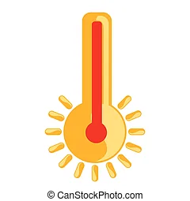
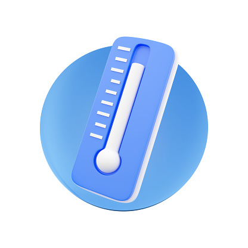

15" alt="">
{{weatherData.name}}
{{ KtoC(weatherData.main.temp) | number:'1.0-0'}}oC
More Information
 min
min
{{KtoC(weatherData.main.temp_min)|number:'1.0-0'}}oC

max
{{KtoC(weatherData.main.temp_max)|number:'1.0-0'}}oC

humidity
{{weatherData.main.humidity}} %
wind
{{weatherData.wind.speed}}
km/h
km/h